In this tutorial, we will build off of the basic HTML file you worked on in the first HTML tutorial to add a few new types of elements.
Step 1
Reopen the index.html file you worked on in the Intro to HTML tutorial. If not already open, launch VS Code, and on the welcome page, select “Open” under the Start menu. From the dialogue that opens, choose the file that you created. It will open in the window, and now you are ready to start editing!
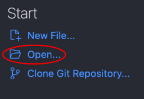
Step 2.1
The first element we will add is a list. A list can be ordered (items are numbered, using the <ol> element) or unordered (items are just bulleted, using the <ul> element.
Below the <p> elements we made in the first tutorial, type the following:
<ol></ol>
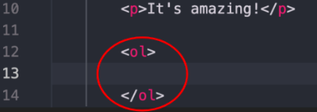
Step 2.2
Indent your cursor on the line between the two <ol> tags. If it does not indent automatically, you can do so by pressing the tab key.
Each item in the list (whether the list is ordered or unordered) will be marked by the tag <li>.
Type <li>Excellent</li>, press enter, and then type <li>Awesome</li>. These are the first two elements in your list.
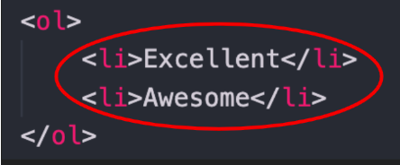
Step 2.3
Continue filling out the list with more items as you desire. When you are ready, use the Open in Browser tool from the VS Code Tips tutorial to see how the list looks in your website (right click on your hml file, then click "Open in Default Browser")
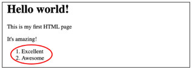
Step 2.4
To change the list to an unordered, or bulleted, list, all you need to do is change the <ol> tags to <ul>. Be sure to edit both the opening tag <ol> and the closing tag </ol>, or the change will not work!
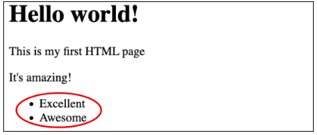
Step 3.1
Another common HTML element is the button. Since this is only a static HTML page, nothing will happen when the button is clicked, but you can learn how to make the button reactive in later tutorials.
Underneath the closing tag of your list element (</ul> or </ol>), type the following: <button>This is a button element</button>
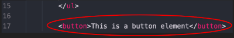
Step 3.2
Save the file and refresh the browser to see how the button looks on your webpage.
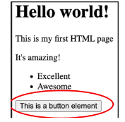
Step 4
An additional element that can be useful to HTML is the break element: <br> This element adds a line break between other elements on the page. The break tag is considered an open tag, which meansit only has an opening tag and not a closing one .
On the line after the button element, type <br>. You can add as many line breaks as you want, between any elements on your webpage. Here, I added two breaks to provide separation between the button element, and the image we will add in the next step.
This change won’t be visible yet on your webpage, but once the image is added, you will be able to see a separation of empty space between the image and the button.
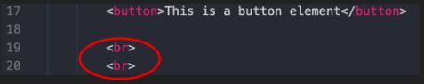
Step 5.1
For the final step in this tutorial, we will add an image to the webpage. You can choose to use an image on your computer, or download provided image: Click here for a sample image.
You can download the image by right-clicking and saving it to your computer. **IMPORTANT** - Be sure to save the image to the SAME FOLDER that your HTML file is located in. In this case, the vscode_tutorial folder. Name the file - “frog”. The file extension, .jpeg, will be added automatically.
In VS Code, the file “frog.jpeg” should now be included in the folder.
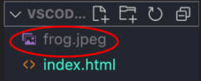
Step 5.2
Next, we will need to add the image tag to the index.html file. The image tag is also an open tag, just like the break element. Below the <button> element, type: <img>
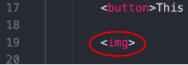
Step 5.3
Next, we will need to add attributes to the tag. Attributes specify additional information about a tag. For an image, they can specify the location of the image file, alternative text to describe it, and its width and height on the page.
Move your cursor inside the <img > tag, between the characters g and >. Add a space, then type the following: src= “frog.jpeg”
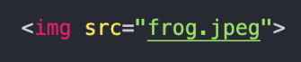
Step 5.4
Next we will add alternative text. Alternative text will show up if the browser is unable to load your photo, or if a user is unable to see your photo, alt text can help them understand what the photo is about.
After the closing quotation of the src attribute, add a space and type the following:
alt=“A frog and its reflection in water”
You can edit the alternate text as you like, but make sure it describes what is in the photo.
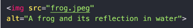
Step 5.5
Finally, we will add the style attribute, which is used to specify aspects of an element such as height and width. This is optional, but recommended, as it can help the browser load your image more smoothly, and ensure the image is not too big or too small.
After the closing quotation of the alt attribute, type the following: style=“width:500px;height:300px;”
You can play around with the numbers for width and height and see how they affect the image, however, make sure to keep the rest of the style attribute the same as this example, or it will not be read correctly by the computer.
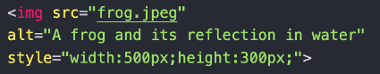
Step 5.6
Save the file in VS Code and refresh the browser. You should now see the image loaded onto your webpage.
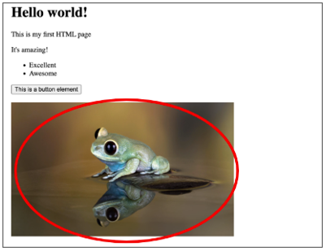
Next Tutorial
Now head on over to our CSS tutorial to get started on styling your websitr!
More Resources
To learn more about HTML, we recommend looking at W3 Schools. This site provides some great information about how to create and edit webpages. It is designed to be easy for beginners and is also free to use!